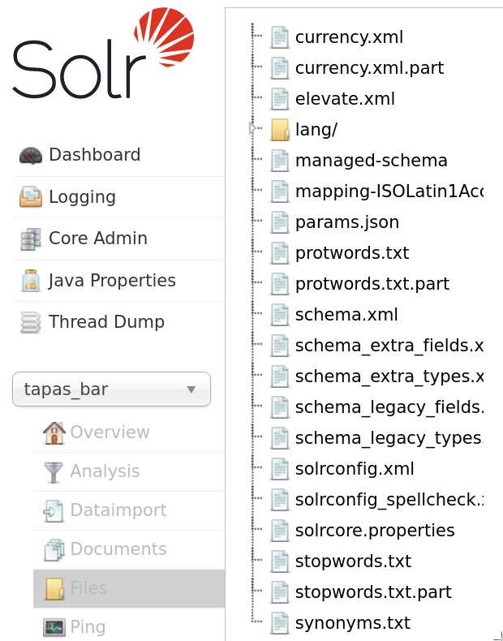
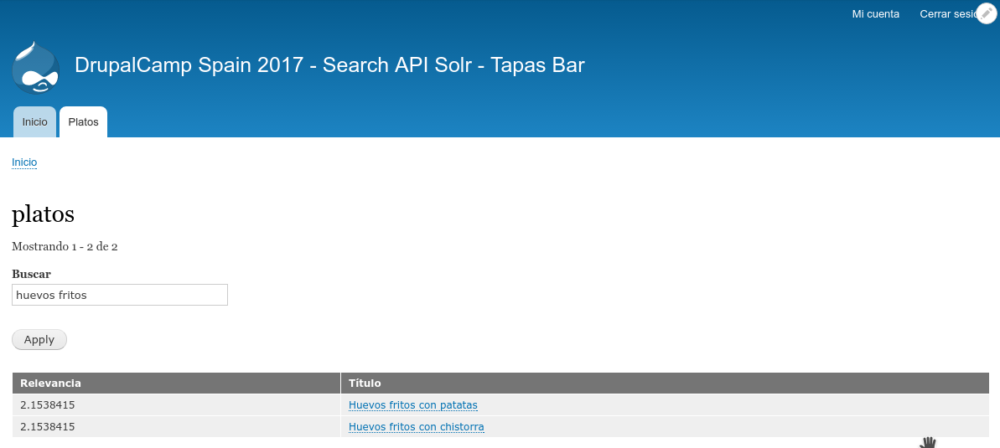

Vamos a hablar de:
"Contrib Search maintainers are committed to make Drupal 8 kick ass with Search API."
|
Thomas Seidl |
Nick Veenhof |
26 Abr 2017 - Official stable release Search API - 8.x-1.0
| 2017 | Search API in Drupal 8 is about to be stable! |
|---|---|
| 2016 | Add support for extract to Connector API Integra distintas "configuraciones" en Search API Solr |
| Battleplan for Search & Solr in Drupal 8 Acquia invierte esfuerzo para unificar el módulo Search API |
|
| 2013 | Kicking off the Search API D8 port (again) in Szeged ¡Cogemos fuerzas de nuevo! |
| (Solr) Search in Drupal 8 Search del core, Query classes, Index logic... |
|
| Change workflow plugin system Unify processors and data alterations, datasources, service classes into proper plugins |
|
| 2012 | Solr Wizardry at Dev Days Barcelona 2012 Colaboración entre mantenedores |
Empieza por la Documentación
https://www.drupal.org/docs/7/modules/search-api https://www.drupal.org/docs/8/modules/search-apihttps://www.drupal.org/docs/8/modules/search-api/extension-modules
Search API + Search API Solr + Solr lo hacen muy bien "Out of the box".
Pequeñas diferencias en su configuración importan.
쮼n qué filas sale y cuátas veces?
A
A E
C K N
A R F O
V P G X D
R E A F K O
N V K V O A Z
N P H T A N X U
X D F H P T Z A N
F A X T D N H U P Z
Lo que tú haces con las letras él lo hace con las palabras (más o menos). Tiene campos con "super poderes".
"쮿ay huevos fritos con papas?"
🡓| "huev frit pap" | "huev frit patat" |

Tierras de items, data sources, campos, processors...
Usa composer. Recuerda que Solarium es una dependencia ahora.
El índice decide qué información (campos) se va a guardar y cómo (tipo de dato)
El "servidor" es el que hace la tarea de almacenar la información y buscarla

| :8983/solr/#/~cores/tapas_bar |
/admin/config/search/search-api/add-server |
| :8983/solr/#/tapas_bar/files  |
admin/config/search/search-api/server/experimental_solr_server/files |
Podemos añadir varios Datasources


Valora la seguridad antes de elegir la opción
Podemos añadir dos campos para una misma propiedad

Activa el módulo Devel y comprueba como se mapean los campos.

Por lo general los procesadores añaden "propiedades" o alteran valores de campos en distintas etapas del proceso.

Search API Solr incluye el módulo search_api_solr_defaults, donde parte de la configuración la tienes hecha, incluyendo una vista por defecto.

No cacheamos. Añadimos filtro expuesto de "Full text search" y lo configuramos para que no admita menos de dos caracteres y seleccionamos los campos sobre los que queremos buscar. Ordenamos por relevancia DESC (podemos añadir después fecha DESC por ejemplo), configuramos permisos de acceso, filtramos por tipo de contenido y por estado del contenido (publicado o no). Añadimos resumen de resultados en la cabecera y texto cuando no hay resultados.
Yeahhh!!!!
#fail

Archivos de configuración de Solr
Todo el código es experimental, sólo con el propósito de dar un ejemplo. Sólo se está usando para estas diapositivas.
Queremos crear un campo en Solr con "super poderes" que procese el texto que guarda y que también lo procese cuando lo busca
Añadir sinónimos, eliminar tildes y palabras comunes...
:8983/solr/#/my_core/files

|
|
schema_extra_types.xml
Cada filter y tokenizer que ves, es parecido a los procesadores de Search API, por eso no debemos activar muchos procesadores en Drupal, Solr ya procesa el texto de la forma que queramos nosotros.
<fieldType name="text_tapas_bar" class="solr.TextField" positionIncrementGap="100">
<analyzer type="index">
<charFilter class="solr.MappingCharFilterFactory" mapping="mapping-ISOLatin1Accent.txt"/>
<tokenizer class="solr.WhitespaceTokenizerFactory"/>
<filter class="solr.SynonymFilterFactory" synonyms="lang/synonyms_es.txt" ignoreCase="true" expand="true"/>
<filter class="solr.StopFilterFactory" words="lang/stopwords_tildes_added_es.txt" format="snowball" ignoreCase="true"/>
<filter class="solr.WordDelimiterFilterFactory" generateWordParts="1" generateNumberParts="1" splitOnCaseChange="1" splitOnNumerics="1" catenateWords="1" catenateNumbers="1" catenateAll="0" protected="protwords.txt" preserveOriginal="1"/>
<filter class="solr.LowerCaseFilterFactory"/>
<filter class="solr.SpanishLightStemFilterFactory"/>
<filter class="solr.RemoveDuplicatesTokenFilterFactory"/>
</analyzer>
</analyzer>
<analyzer type="query">
<charFilter class="solr.MappingCharFilterFactory" mapping="mapping-ISOLatin1Accent.txt"/>
<tokenizer class="solr.WhitespaceTokenizerFactory"/>
<!-- Read https://wiki.apache.org/solr/AnalyzersTokenizersTokenFilters#solr.SynonymFilterFactory -->
<!-- <filter class="solr.SynonymFilterFactory" synonyms="lang/synonyms_es.txt" ignoreCase="true" expand="true"/> -->
<filter class="solr.StopFilterFactory" words="lang/stopwords_tildes_added_es.txt" format="snowball" ignoreCase="true"/>
<filter class="solr.WordDelimiterFilterFactory" generateWordParts="1" generateNumberParts="1" splitOnCaseChange="1" splitOnNumerics="1" catenateWords="0" catenateNumbers="0" catenateAll="0" protected="protwords.txt" preserveOriginal="1"/>
<filter class="solr.LowerCaseFilterFactory"/>
<filter class="solr.SpanishLightStemFilterFactory"/>
<filter class="solr.RemoveDuplicatesTokenFilterFactory"/>
</analyzer>
</fieldType>
schema_extra_fields.xml
<dynamicField name="tbars_*" type="text_tapas_bar" indexed="true" stored="true" multiValued="false" termVectors="true"/>
<dynamicField name="tbarm_*" type="text_tapas_bar" indexed="true" stored="true" multiValued="true" termVectors="true"/>
Estos campos dinámicos van a ser reconocidos por Search API Solr, siempre y cuando tengan la nomenclatura adecuada como vimos antes.
:8983/solr/#/tapas_bar/schema
:8983/solr/#/tapas_bar/analysis
Puedes comprobar directamente en Solr cómo se va a indexar y a buscar tu campo.
¡Es muy útil!


¡Ahora si!

La hacemos a través de plugins
Crear backend plugin de Search API Solr que reconozca nuestro tipo.
Crear un plugin data_type para que Drupal pueda operar con él.
Extra: Ejemplo de processor plugin que crea un campo (propiedad) para indexar.
Probablemente esto no es lo que quieras hacer en producción, pero como ejemplo vale para ver los elementos implicados
namespace Drupal\tapas_bar_solr\Plugin\search_api\backend;
use Drupal\search_api_solr\Plugin\search_api\backend\SearchApiSolrBackend;
/**
* Experimental Apache Solr backend for search api.
*
* @SearchApiBackend(
* id = "tapas_bar_solr_backend",
* label = @Translation("Experimental Tapas Bar Solr backend"),
* description = @Translation("Index items using a Custom Solr backend.")
* )
*/
class TapasBarSolrServer extends SearchApiSolrBackend {
function supportsDataType($type) {
return parent::supportsDataType($type) | $type == 'text_tapas_bar';
}
}
namespace Drupal\tapas_bar_solr\Plugin\search_api\data_type;
use Drupal\search_api\DataType\DataTypePluginBase;
/**
*
* @SearchApiDataType(
* id = "text_tapas_bar",
* label = @Translation("FullText Tapas Bar"),
* description = @Translation("A text field which takes in account Spanish tapas bar language"),
* fallback_type = "text",
* prefix = "tbar",
* )
*/
class TapasBarDataType extends DataTypePluginBase {
}
Existen funciones para comprobar si el índice es soportado... no están incluidas.
namespace Drupal\tapas_bar_solr\Plugin\search_api\processor;
use Drupal\search_api\Datasource\DatasourceInterface;
use Drupal\search_api\Item\ItemInterface;
use Drupal\search_api\Processor\ProcessorPluginBase;
use Drupal\search_api\Processor\ProcessorProperty;
/**
* Adds an experimental property to index.
*
* hidden = true | Won't show on Processors Tab
* locked = true | If it shows, it will be "disabled"
*
* @SearchApiProcessor(
* id = "tapas_add_discount",
* label = @Translation("Adds experimental boolean field"),
* description = @Translation("Adds experimental boolean field as if it were a discount (tapas bar)."),
* stages = {
* "add_properties" = 0,
* },
* locked = true,
* hidden = false,
* )
*/
class AddTapasDiscount extends ProcessorPluginBase {
/**
* {@inheritdoc}
*/
public function getPropertyDefinitions(DatasourceInterface $datasource = NULL) {
$properties = [];
if (!$datasource) {
$definition = [
'label' => $this->t('Tapas Bar - Add discount fields'),
'description' => $this->t('Adds a discount boolean field'),
'type' => 'boolean',
'processor_id' => $this->getPluginId(),
];
$properties['tapas_discount_field'] = new ProcessorProperty($definition);
}
return $properties;
}
/**
* {@inheritdoc}
*/
public function addFieldValues(ItemInterface $item) {
$fields = $this->getFieldsHelper()
->filterForPropertyPath($item->getFields(), NULL, 'tapas_discount_field');
foreach ($fields as $field) {
if (!$field->getDatasourceId()) {
// Let's map it with an integer and see how it behaves...
$field->addValue(rand(0,1) == 1);
}
}
}}¡A todos los voluntarios!
¡A la Organización!
¡A la Asociación Española de Drupal!
¡A los patrocinadores!
¡A todos vosotros!